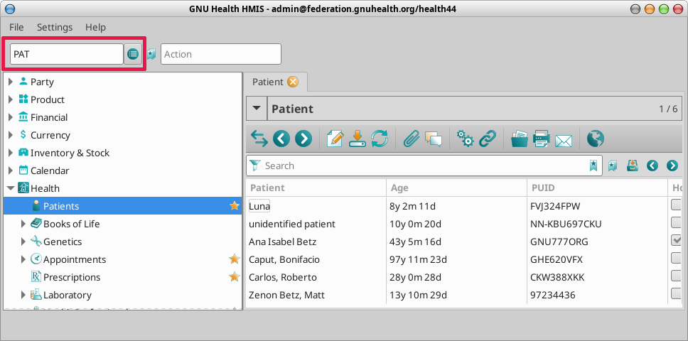

Command Line
Description
The native HIS client allows to use most of the functionality from the command line, without the need of the menu. It’s much faster and direct than the previous menu-based client. Of course, the menu is still available.
Most commands accept arguments, so the user can go directly to one specific instance of the resource. For example


PAT : List all the people registered on the system
PAT ESPGNU777ORG : Takes you directly to the patient with federation ID “ESPGNU777ORG”
Accessing the command line
The command line can be accessed by clicking on the Command Line box (either at the top or bottom left of the client).
Clicking SHIFT + Z will put the focus on the Command Line Interface section.
Command |
Description |
|---|---|
CMD |
GNU Health Commands |
PPL |
Demographics |
PAT |
Patients |
SYSINFO |
Technical Information for client and server |
LAB |
Lab Test Results |
FEDQ |
Federation objects queue |
MED |
Patient Medicaments |
APP |
Appointments |
SES |
Socioeconomics and Family Functionality Assessment |
DU |
Domiciliary Units |
HP |
Health Professionals |
RX |
Prescription Orders |
EVL |
Patient Evaluations |
ECG |
Electrocardiograms |
RCRI |
Revised Cardiac Risk Index |
DX |
Health Conditions |
POL |
Pages of Life |
GEN |
Personal Genetic Info |
NEO |
Newborn / Neonatal Information |
OBS |
Obstetric histories |
SRV |
Patient Health Services |
SUR |
Surgeries |
MI |
Medical Imaging Results |
INV |
Invoices |
PRD |
Products |
CMD |
GNU Health Commands |
GDIS |
Disease Genes |
VAR |
Natural variants |
VARP |
Natural variant phenotypes |
PDIS |
Protein related diseases |